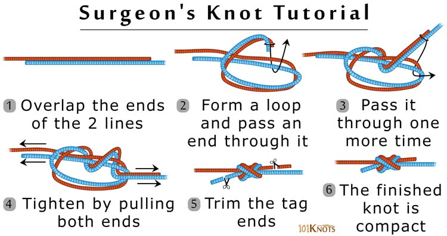

Based on the square (reef) knot, the surgeon’s knot owes its name to its common use by surgeons to secure the threads in a suture. Though originally a surgical knot it has found wide use in fly fishing to effectively connect the leader to the tippet. It joins 2 lines of equal or unequal diameters as well as lines of different materials.
